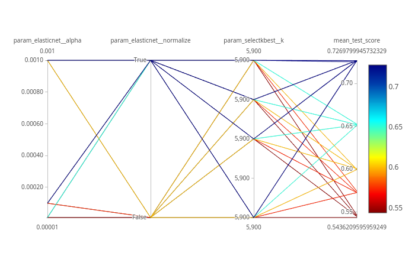
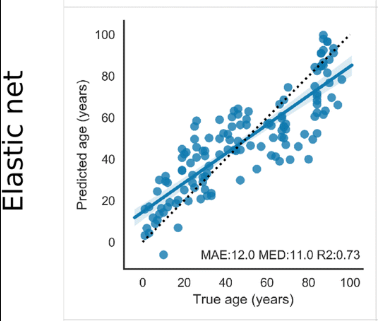
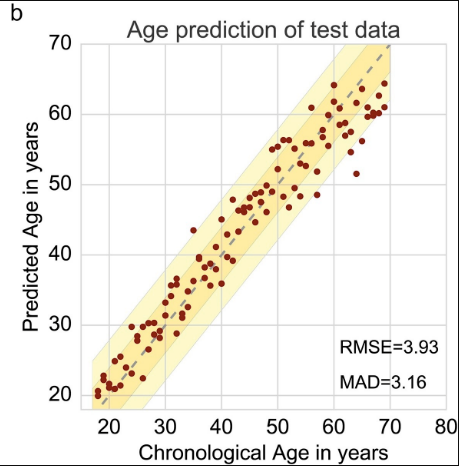

Machine Learning is used to create predictive models by learning features from datasets. In the studies performed by Jason G. Fleischer et al. 2018 and Jana Naue et al. 2017, biomarkers are examined to predict the chronological age of humans by analysing the RNA-seq gene expression levels and DNA methylation pattern respectively. Different machine learning algorithms are used in these studies to select specific biomarkers to make age prediction. The RNA-seq gene expression (FPKM) dataset is generated using fibroblast cell lines of humans. The skin fibroblasts cells keep damage that happens with age. Epigenomic and phenotypic changes which are age-dependent are also contained in these cells. Within each individual, DNA methylation changes with age. This knowledge is used to select useful biomarkers from DNA methylation dataset. The CpGs sites with the highest correlation to age are selected as the biomarkers/features. In both these studies, specific biomarkers are analysed by machine learning algorithms to create an age prediction model.
The datasets from these studies contain features (present as columns). The last column in both the datasets refers to age which is used as labels/targets. Since the targets are real numbers, the machine learning task becomes regression. Using these features and targets, a model is learned using machine learning (regression) which learns a mapping between these features and targets. Using machine learning tools in Galaxy, we can achieve comparable prediction scores to those achieved by published analyses. In this tutorial, we will apply a couple of (scikit-learn) machine learning tools to RNA-seq and DNA methylation datasets to predict the chronological age of humans. This tutorial is divided into two parts - one with an RNA-seq dataset and another with a DNA methylation dataset.
comment Comment
In cross-validation, a dataset is divided into k equal parts (k should be at least 2). One part is used as the validation set to evaluate the performance of any machine learning algorithm and the remaining parts are used for learning/training.
R2 (coefficient of determination)
In both the parts, learning on datasets is done using cross-validation and the R2 scoring metric is used to evaluate the performance of the trained model. The closer it is to 1.0, the better it is. If it is negative, then the trained model is not good. To infer how its values exhibit model performance, we can compare the figures 1 and 2. In both the plots, the true and predicted targets are plotted in a scatter plot. For a good model, most of the points should lie along the x = y line as the true and predicted targets are close to each other. In figure 1, we can see that the points are scattered and do not show any pattern. Therefore, the R2 score is -0.06. But, figure 2 shows a better pattern as most of the points lie along the line and the R2 score is almost 1.0. For RNA-seq dataset, we will compute the cross-validated R2 score using the training set and for DNA methylation dataset, we will compute the R2 score for the test set.
Figure 1: This shows an example of a bad model as most of the points are scattered. For a model to be good, most of the points should lie along the x = y line. It means that the predicted target on the y (vertical) axis is close to the true targets on the x (horizontal) axis.Figure 2: This shows an example of a good model as most of the points lie along the x = y line. Because most of the points lie along the x = y line, R2 score is 0.99 very close to the best score of 1.0
The RNA-seq dataset is collected from fibroblast cell lines belonging to 133 healthy patients with age ranging from 1 to 94 years. The skin fibroblasts cells dataset is conducive for age prediction related studies for multiple reasons - these skin fibroblasts hold age-related damage, contain phenotypic, epigenomic and transcriptomic changes which are age-dependent and it is easy to collect this dataset using non-invasive techniques. Using this dataset, we perform an exhaustive search (also known as grid search) for finding the best features and then apply ElasticNet regressor with 5-fold cross-validation. The R2 score achieved is comparable to the predictions found in the study performed by Jason G. Fleischer et al. 2018.
details 5-fold cross-validation
It is a model validation technique which estimates the performance of a predictive model on an unseen data. A dataset is divided into 5 folds and these folds are categorised into training and validation sets. The idea of cross-validation is shown in figure 3. The complete dataset is divided into 5 equal parts. 80% of the dataset is used for training and the remaining 20% is used for validating the performance of training. This is done for 5 folds/iterations, each time the validation set (20% of the dataset) is different. In all five folds, the complete dataset is used for training and validation. The final validation performance is averaged over 5 folds.
Figure 3: The image shows how the 5-fold cross-validation works. The complete dataset is divided into 5 equal parts/folds. 4 parts (80%) of the data (training set shown in yellow) are used for training the model and the remaining one part is used for evaluating (validation set shown in blue) the trained model. This is repeated for 5 times till every part/fold is used as the validation set. The accuracies computed for different validation folds are averaged to give 5-fold cross-validation accuracy.
Get dataset
We proceed to the analysis by uploading the RNA-seq dataset. The dataset has 133 rows corresponding to human patients and over 27,000 columns specifying genes. The last column age contains the chronological age. For the validation set, this age column is predicted and the R2 metric is computed.
hands_on Hands-on: Data upload
Create a new history for this tutorial
tip Tip: Creating a new history
Click the new-history icon at the top of the history panel
If the new-history is missing:
Click on the galaxy-gear icon (History options) on the top of the history panel
Open the Galaxy Upload Manager (galaxy-upload on the top-right of the tool panel)
Select Paste/Fetch Data
Paste the link into the text field
Press Start
Close the window
By default, Galaxy uses the URL as the name, so rename the files with a more useful name.
Rename the dataset to training_data_normal.
tip Tip: Renaming a dataset
Click on the galaxy-pencilpencil icon for the dataset to edit its attributes
In the central panel, change the Name field
Click the Save button
Check that the datatype is tabular.
tip Tip: Changing the datatype
Click on the galaxy-pencilpencil icon for the dataset to edit its attributes
In the central panel, click on the galaxy-chart-select-dataDatatypes tab on the top
Select datatypes
Click the Change datatype button
comment Comment
In the training_data_normal dataset, you might have noticed that it showed 134 rows instead of 133 rows. The first row contains the header information i.e. the description of each column.
Create data processing pipeline
We can see that this RNA-seq dataset is high-dimensional. There are over 27,000 columns/features. Generally, not all the features in the dataset are useful for prediction. We need only those features which increase the predictive ability of the model. To filter these features, we perform feature selection and retain only those which are useful. To do that, we use SelectKBest module. This approach involves extracting those features which are most correlated to the target (age in our dataset). F-regression is used for the extraction of features. Moreover, we are not sure of how many of these features we will need. To find the right number of features, we do a hyperparameter search (to find the best combination of values of different parameters). It works by setting many different numbers of features to determine to number which gives the highest accuracy. To wrap this feature selector with a regressor, we will use the Pipeline builder tool. This tool creates a sequential flow of algorithms to execute on datasets. Since the hyperparameters will be tuned, we choose to output the parameters for searchCV. The tool does not take any dataset as input. Rather, the outputs will be used as inputs to the Hyperparameter search tool (explained in the following step). We will use ElasticNet as a regressor which creates an age prediction model. It is a linear regressor with l1 (also called lasso) and l2 (also called ridge) as regularisers. Regularisation is a technique used in machine learning to prevent overfitting. Overfitting happens when a machine learning algorithm starts memorising the dataset it is trained upon, rather than learning general features. The consequence of overfitting is that the accuracy on the training set is good, but results on the unseen set (test set) are poor, which happens because the algorithm has not learned general features from the dataset. To prevent overfitting, regularisers like l1 and l2 are used. L1 is a linear term added to the error function of a machine learning algorithm and l2 adds a squared term to the error function. More details about l1 and l2 can found here.
hands_on Hands-on: Create pipeline
Pipeline buildertool with the following parameters:
In “1: Pre-processing step”:
“Choose the type of transformation”: Feature Selection
“Select a feature selection algorithm”: SelectKBest - Select features according to the k highest scores
“Select a score function”: f_regression - Univariate linear regression tests
In “Final Estimator”:
“Choose the module that contains target estimator”: sklearn.linear_model
“Choose estimator class”: ElasticNet
“Type in parameter settings if different from default”: random_state=42
In “Output parameters for searchCV?”: Yes
Optimise hyperparameters
In any machine learning algorithm, there are many parameters (hyperparameters). We are not sure which values of these parameters will give an optimal prediction. The default values given for these parameters may not be optimal for different datasets. To find the best combination of the values of different parameters for a dataset, hyperparameter optimisation is performed. There are different techniques to optimise the hyperparameters of any algorithm given a dataset:
For our analyses, we will use the grid search approach. It is an exhaustive search which tries out all the combinations of different hyperparameters and ranks these combinations based on a scoring metric. In the random search, the values of a parameter are selected randomly from a given range and the best one is found. Grid search works well for parameters taking categorical as well as numerical values but for the random search, it becomes difficult for parameters which take categorical values.
In the Pipeline builder tool, we added two steps - preprocessing (feature selection) and an estimator (regressor). There are different hyperparameters for these two steps and their best combination needs to be found. We will perform grid search to estimate the best values for these parameters: k (number of features), normalize (subtract the mean and divide by the l2-norm of the dataset) and alpha (a constant which is multiplied by the regularisation term). For each parameter, we need to specify a set of values to choose from:
k: [5880, 5890, 5895, 5900]
These values of k are chosen to get the best accuracy. We can choose any number (integers) between 1 and 27,000 (maximum number of features in the dataset). We will use only these values (shown above) for k as the accuracy remains the best around these numbers. However, it may vary for a different RNA-seq dataset. That’s the reason why we perform hyperparameter search to find the best values of parameters for any dataset.
normalize: [True, False]
The default value of normalize is False. We will check both, True and False.
alpha: [0.00001, 0.0001, 0.001]
The parameter alpha takes a positive real number and its default value is 1.0.
For these three parameters, we have 24 different combinations (4 x 2 x 3) of values and we will verify the performance of each combination. The parameter k is used for feature selection and parameters normalize and alpha are used for the regressor. There are many more hyperparameters of the ElasticNet regressor which are explained in the official documentation of scikit-learn. However, the combination of the above three parameters already gives a comparable accuracy published in the study Jason G. Fleischer et al. 2018. Therefore, we will stick to these parameters.
comment Comment
It is advisable to tune all the parameters of a machine learning algorithm for a dataset if no prior information is available about the subset of parameters which works best for the dataset.
comment Comment
These parameters have the same description and values in the second part of the tutorial where we will again use the Hyperparameter search tool.
Search for the best values of hyperparameters
We will use the Hyperparameter search tool to find the best values for each hyperparameter. These values will lead us to create the best model based on the search space chosen for each hyperparameter.
hands_on Hands-on: Hyperparameter search
Hyperparameter searchtool with the following parameters:
“Select a model selection search scheme”: GridSearchCV - Exhaustive search over specified parameter values for an estimator
param-files“Choose the dataset containing pipeline/estimator object”: zipped file (one of the outputs of Pipeline buildertool)
In “Search parameters Builder”:
param-files“Choose the dataset containing parameter names”: tabular file (the other output of Pipeline buildertool)
In “Parameter settings for search”:
param-repeat“1: Parameter settings for search”
“Choose a parameter name (with current value)”: selectkbest__k: 10
“Search list”: [5880, 5890, 5895, 5900]
param-repeat“2: Parameter settings for search”
“Choose a parameter name (with current value)”: elasticnet__normalize: False
“Search list”: [True, False]
param-repeat“3: Parameter settings for search”
“Choose a parameter name (with current value)”: elasticnet__alpha: 1.0
“Search list”: [0.00001, 0.0001, 0.001]
In “Advanced Options for SearchCV”:
“Select the primary metric (scoring)”: Regression -- 'r2'
A scoring metric can be set. In this tutorial, we use Regression -- 'r2'
“Select the cv splitter”: KFold
There are different ways to split the dataset into training and validation sets. In our tutorial, we will use KFold which splits the dataset into K consecutive parts. It is used for cross-validation. It is set to 5 using another parameter n_splits.
“n_splits”: 5
“Whether to shuffle data before splitting”: Yes
“Random seed number”: 3111696
It is set to an integer and used to retain the randomness/accuracy when “Whether to shuffle data before splitting” is Yes across successive experiments.
“Raise fit error”: No
While setting different values for a parameter during hyperparameter search, it can happen that wrong values are set which may generate exceptions. To avoid stopping the execution of a regressor, it is set to No which means even if a wrong parameter value is encountered, the regressor does not stop running and skips that value.
“Choose how to select data by column”: All columns EXCLUDING some by column header name(s)
“Type header name(s)”: age
param-files“Dataset containing class labels or target values”: training_data_normal tabular file
“Does the dataset contain header”: Yes
“Choose how to select data by column”: Select columns by column header name(s)
“Type header name(s)”: age
“Whether to hold a portion of samples for test exclusively?”: Nope
The tool returns two outputs, one of which is a table with numerical results. Please inspect it carefully: the rank_test_score column shows the ranking of different combinations based on the values in the mean_test_score column.
question Questions
What is the best mean_test_score value estimated by the Hyperparameter search tool?
Which combination of parameters gives the best result?
How many possible combinations of parameters the Hyperparameter search tool estimated?
solution Solution
0.73 (it is close to the best R2 score (0.81) achieved by a customised ensemble algorithm explained by Jason G. Fleischer et al. 2018)
alpha: 0.001, normalize: True, k: 5880
24 (it is equal to the number of rows in the tabular output of Hyperparameter searchtool)
Create parallel coordinates plot
We will visualize the tabular output of Hyperparameter search tool from the previous step using the Parallel coordinates plot of tabular data tool. There are multiple columns in the tabular output, but we will focus on only a few of them.
Parallel coordinates plottool with the following parameters:
param-files“Select data file”: tabular file (output of Hyperparameter searchtool)
“Select the columns for dimensions”: c4, c5, c6
“Select a column containing the values for coloring”: c3
The output plot has the following legend: the colour-coding is based on the mean_test_score (c3) column. You can follow the line leading to the score along every column with the parameters’ settings. The columns c4, c5 and c6 are the parameters we chose and c3 is the accuracy column present in the tabular output of Hyperparameter search tool.
Figure 4: The visualization of the hyperparameter optimisation tool output. We optimised the values of 3 hyperparameters (alpha, normalize and k). These can be seen as the columns (first three from left to right) in the plot. The rightmost column contains the accuracy values (mean_test_score).
question Questions
What are the worst performing combinations of hyperparameters (name four)?
solution Solution
Worst four:
alpha: 0.00001, normalize: False, k: 5880
alpha: 0.00001, normalize: False, k: 5890
alpha: 0.00001, normalize: False, k: 5895
alpha: 0.00001, normalize: False, k: 5900
Compare results with original paper
Figure 5: The plot shows accuracy obtained in the paper from Jason G. Fleischer et al. 2018 (Predicting age from the transcriptome of human dermal fibroblasts) using ElasticNet regressor. The R2 scores achieved in the tutorial and mentioned in the paper using the same regressor are comparable.
Summary
Figure 4 shows that we achieved an R2 score of 0.73 (last column) with 5-fold cross-validation on the training set. In the study Jason G. Fleischer et al. 2018 as well, a similar R2 score is mentioned for linear regressors (Linear regression and ElasticNet). Moreover, the study also included a customised ensemble regressor which achieved better performance (R2 = 0.81). However, our analysis showcases the use of machine learning tools in Galaxy to reproduce the results published in the paper.
Analyze DNA methylation dataset
In the second part of the analysis, we will use the DNA methylation dataset to predict chronological age. One important reason to choose this dataset for an age prediction task is that DNA methylation changes with age and this change occurs at specific CpG sites in humans. Whole blood samples are collected from humans with their ages falling in the range 18-69 and the best age-correlated CpG sites in the genome are chosen as features. The dataset is divided into two parts - training and test sets. The training set is used to train a regressor and the test set is used to evaluate the performance of the trained model using the R2 scoring metric. 5-fold cross-validation is used for training.
Get train and test datasets
We proceed with the analysis by uploading new datasets. You might want to create a new history first. The training set contains 208 rows corresponding to humans and 13 features (age-correlated CpG sites in DNA methylation dataset). The last column is age. The test set contains 104 rows and the same number of features as the training set. The age column in the test set is predicted after training on the training set. Another dataset test_rows_labels contains the true age values of the test set which is used to compute R2 scores between true and predicted age.
Open the Galaxy Upload Manager (galaxy-upload on the top-right of the tool panel)
Select Paste/Fetch Data
Paste the link into the text field
Press Start
Close the window
By default, Galaxy uses the URL as the name, so rename the files with a more useful name.
Rename the datasets as train_rows, test_rows_labels and test_rows respectively.
tip Tip: Renaming a dataset
Click on the galaxy-pencilpencil icon for the dataset to edit its attributes
In the central panel, change the Name field
Click the Save button
Check that the datatype of all the three datasets is tabular.
tip Tip: Changing the datatype
Click on the galaxy-pencilpencil icon for the dataset to edit its attributes
In the central panel, click on the galaxy-chart-select-dataDatatypes tab on the top
Select datatypes
Click the Change datatype button
The train_rows contains a column Age which is the label or target. We will evaluate our model on test_rows and compare the predicted age with the true age in test_rows_labels
Create data processing pipeline
We will create a pipeline with Pipeline builder tool, but this time, we just specify the regressor. Jana Naue et al. 2017 has used Random Forest as the regressor and we can conclude from this study that the ensemble-based regressor works well on this DNA methylation dataset. Therefore, we will use Gradient boosting which is an ensemble-based regressor because it uses multiple decision tree regressors internally and predicts by taking the collective performances of the predictions (by multiple decision trees). It has a good predictive power and is robust to outliers. It creates an ensemble of weak learners (decision trees) and iteratively minimises error. One disadvantage, which comes from its basic principle of boosting, is that it cannot be parallelised. The Pipeline builder tool will wrap this regressor and return a zipped file and a tabular file containing all tunable hyperparameters.
hands_on Hands-on: Create pipeline
Pipeline buildertool with the following parameters:
In “Final Estimator”:
“Choose the module that contains target estimator”: sklearn.ensemble
“Type in parameter settings if different from default”: random_state=42
In “Output parameters for searchCV?”: Yes
comment Comment
The ensemble method uses multiple learning models internally for better predictions.
Optimise hyperparameters
For this analysis, we will also use the Hyperparameter search tool to estimate the best values of parameters for the given dataset.
We use only one parameter n_estimators of the Gradient boosting regressor for this task. This parameter specifies the number of boosting stages the learning process has to go through. The default value of n_estimators for this regressor is 100. However, we are not sure if this gives the best accuracy. Therefore, it is important to set this parameter to different values to find the optimal one. We choose some values which are less than 100 and a few more than 100. The hyperparameter search will look for the optimal number of estimators and gives the best-trained model as one of the outputs. This model is used in the next step to predict age in the test dataset.
Search for the best values of hyperparameters
We will use the Hyperparameter search tool to find the best values for each hyperparameter. These values will lead us to create the best model based on the search space chosen for each hyperparameter.
hands_on Hands-on: Hyperparameter search
Hyperparameter searchtool with the following parameters:
“Select a model selection search scheme”: GridSearchCV - Exhaustive search over specified parameter values for an estimator
param-files“Choose the dataset containing pipeline/estimator object”: zipped file (one of the outputs of Pipeline buildertool)
In “Search parameters Builder”:
param-files“Choose the dataset containing parameter names”: tabular file (the other output of Pipeline buildertool)
In “Parameter settings for search”:
param-repeat“1: Parameter settings for search”
“Choose a parameter name (with current value)”: n_estimators: 100
“Search list”: [25, 50, 75, 100, 200]
In “Advanced Options for SearchCV”:
“Select the primary metric (scoring)”: Regression -- 'r2'
A scoring metric can be set. In this tutorial, we use Regression -- 'r2'
“Select the cv splitter”: KFold
There are different ways to split the dataset into training and validation sets. In our tutorial, we will use KFold which splits the dataset into K consecutive parts. It is used for cross-validation. It is set to 5 using another parameter n_splits.
“n_splits”: 5
“Whether to shuffle data before splitting”: Yes
“Random seed number”: 3111696
It is set to an integer and used to retain the randomness/accuracy when “Whether to shuffle data before splitting” is Yes across successive experiments.
“Raise fit error”: No
While setting different values for a parameter during hyperparameter search, it can happen that wrong values are set which may generate exceptions. To avoid stopping the execution of a regressor, it is set to No which means even if a wrong parameter value is encountered, the regressor does not stop running and skips that value.
“Choose how to select data by column”: All columns EXCLUDING some by column header name(s)
“Type header name(s)”: Age
param-files“Dataset containing class labels or target values”: train_rows tabular file
“Does the dataset contain header”: Yes
“Choose how to select data by column”: Select columns by column header name(s)
“Type header name(s)”: Age
“Whether to hold a portion of samples for test exclusively?”: Nope
question Question
What is the optimal number of estimators for the given dataset?
Hint: Please look at the mean_test_score column in the tabular result from the Hyperparameter search tool.
solution Solution
(Even though the default value of the number of estimators for Gradient boosting regressor is 100, 75 gives the best accuracy. That’s why it is important to perform hyperparameter search to tune these parameters for any dataset). 50 estimators also give almost the same accuracy.
Predict age
Using the Hyperparameter search tool, we found the best model based on the training data. Now, we will predict age in the test dataset using this model in order to see if the model has learned important features which can be generalised on a new dataset. The test dataset (test_rows) contains the same number of features, but does not contain the age column. This is predicted using the trained model.
hands_on Hands-on: Predict age
Ensemble methods for classification and regressiontool with the following parameters:
“Select a Classification Task”: Load a model and predict
param-files“Models”: zipped file (output of Hyperparameter searchtool)
In the previous step, we generated predictions for the test dataset. We have one more dataset (test_rows_labels) which contains the true age values of the test set. Using the true and predicted values of age in the test set, we will verify the performance by analysing the plots.
hands_on Hands-on: Create regression plots
Plot actual vs predicted curves and residual plots of tabular datatool with the following parameters:
param-files“Select input data file”: test_rows_labels tabular file
param-files“Select predicted data file”: tabular file (output of Ensemble methods for classification and regressiontool)
The tool outputs three HTML files which contain the interactive plots.
question Question
Inspect the plots. What can you say about the predictions?
solution Solution
Figures 6 and 8 show that the prediction is good because the predicted age lies close to the true age.
Figure 6: Scatter plot for true and predicted age for test set. It is evident from the plot that most of the points lie along the x = y line, which means that true and predicted ages are close to each other. The root mean squared error in predicting age is 3.76 years and R2 score (0.94) is close to the best score of 1.0.
We can see in the scatter plot (figure 6) that most of the points lie along the x=y curve. It means that the true and predicted ages are close to each other. The root mean square error (RMSE) is 3.76 and the R2 score is 0.94.
Figure 7: The plot shows the residuals (predicted age - true) age against the predicted age. For a good learning/training, this plot should not show any distinct pattern and the points should be symmetrically distributed along the y = 0 line.
The residual plot shown in figure 7 is generated to see if there is any visible pattern between residual (predicted age - true age) and predicted age. For a good model, there should not be any visible pattern with the plotted points.
Figure 8: The plot shows the true vs predicted age for all the samples in the test set. We can see that the predicted values are close to the true values.
Compare results with original paper
Figure 9: The plot is from Jana Naue et al. 2017 (Chronological age prediction based on DNA methylation) and shows a scatter plot with the predicted age on the vertical axis and the true age on the horizontal axis. The plot is comparable to the scatter plot shown in figure 6. The RMSE score is also comparable. The paper used Random forest as the regressor and we used Gradient boosting as the regressor.
Summary
Figure 6 shows that we achieved an R2 score of 0.94 and root mean square score of 3.76 for the test set using the Gradient boosting regressor. The study of Jana Naue et al. 2017 also mentions a similar root mean square score (3.93), derived using the random forest regressor. The root mean square score shows the difference in the true and predicted age of humans. The R2 score (0.94) is close to the best achievable score of 1.0 which shows that the trained model is good. Overall, the second part of the analysis also shows that using the machine learning tools in Galaxy, we can achieve state-of-the-art predictions mentioned in the recent scientific studies.
Conclusion
In our tutorial, we were able to use machine learning tools in Galaxy to reproduce the results reported in these scientific studies - Jason G. Fleischer et al. 2018 and Jana Naue et al. 2017. We also learned how to work with high-dimensional datasets, perform a hyperparameter search and cross-validation. Further, we can reuse the trained models to make predictions on a new dataset provided that this new dataset has the same features. There are numerous other machine learning algorithms available in Galaxy which can also be tried out on these datasets to verify whether the accuracy can be improved.
keypoints Key points
Various machine learning algorithms should be used to find the best ones
For each machine learning algorithm, it hyperparameters should be optimised based on the dataset
Feature selection should be done for high-dimensional datasets
Feedback
Did you use this material as an instructor? Feel free to give us feedback on how it went.
Batut et al., 2018 Community-Driven Data Analysis Training for Biology Cell Systems 10.1016/j.cels.2018.05.012
details BibTeX
@misc{statistics-age-prediction-with-ml,
author = "Ekaterina Polkh and Anup Kumar",
title = "Age prediction using machine learning (Galaxy Training Materials)",
year = "2021",
month = "01",
day = "06"
url = "\url{/training-material/topics/statistics/tutorials/age-prediction-with-ml/tutorial.html}",
note = "[Online; accessed TODAY]"
}
@article{Batut_2018,
doi = {10.1016/j.cels.2018.05.012},
url = {https://doi.org/10.1016%2Fj.cels.2018.05.012},
year = 2018,
month = {jun},
publisher = {Elsevier {BV}},
volume = {6},
number = {6},
pages = {752--758.e1},
author = {B{\'{e}}r{\'{e}}nice Batut and Saskia Hiltemann and Andrea Bagnacani and Dannon Baker and Vivek Bhardwaj and Clemens Blank and Anthony Bretaudeau and Loraine Brillet-Gu{\'{e}}guen and Martin {\v{C}}ech and John Chilton and Dave Clements and Olivia Doppelt-Azeroual and Anika Erxleben and Mallory Ann Freeberg and Simon Gladman and Youri Hoogstrate and Hans-Rudolf Hotz and Torsten Houwaart and Pratik Jagtap and Delphine Larivi{\`{e}}re and Gildas Le Corguill{\'{e}} and Thomas Manke and Fabien Mareuil and Fidel Ram{\'{\i}}rez and Devon Ryan and Florian Christoph Sigloch and Nicola Soranzo and Joachim Wolff and Pavankumar Videm and Markus Wolfien and Aisanjiang Wubuli and Dilmurat Yusuf and James Taylor and Rolf Backofen and Anton Nekrutenko and Björn Grüning},
title = {Community-Driven Data Analysis Training for Biology},
journal = {Cell Systems}
}
congratulations Congratulations on successfully completing this tutorial!
 Ekaterina Polkh
Ekaterina Polkh Anup Kumar
Anup Kumar